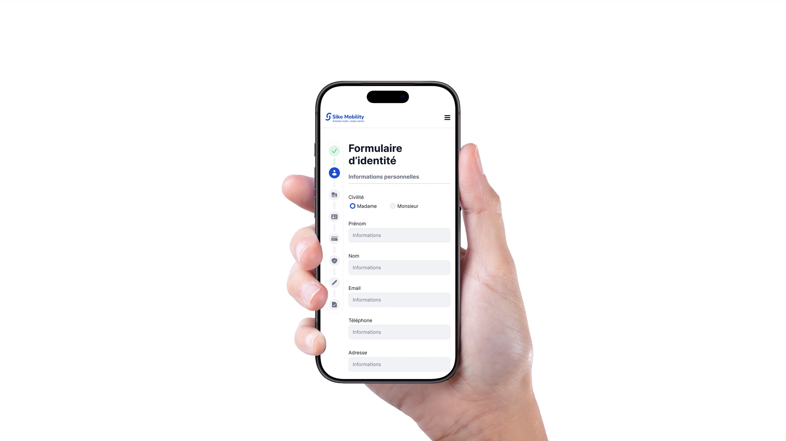
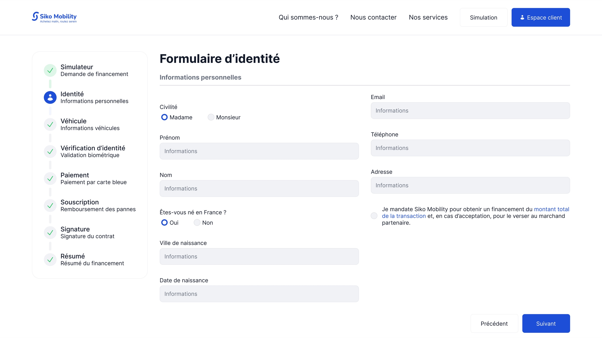
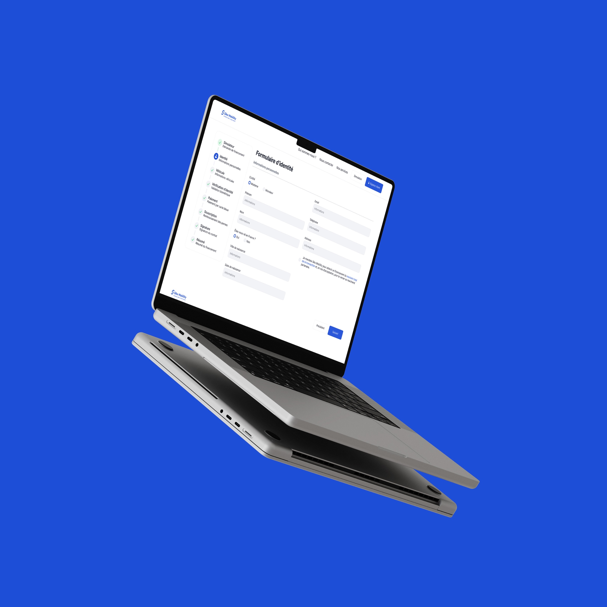
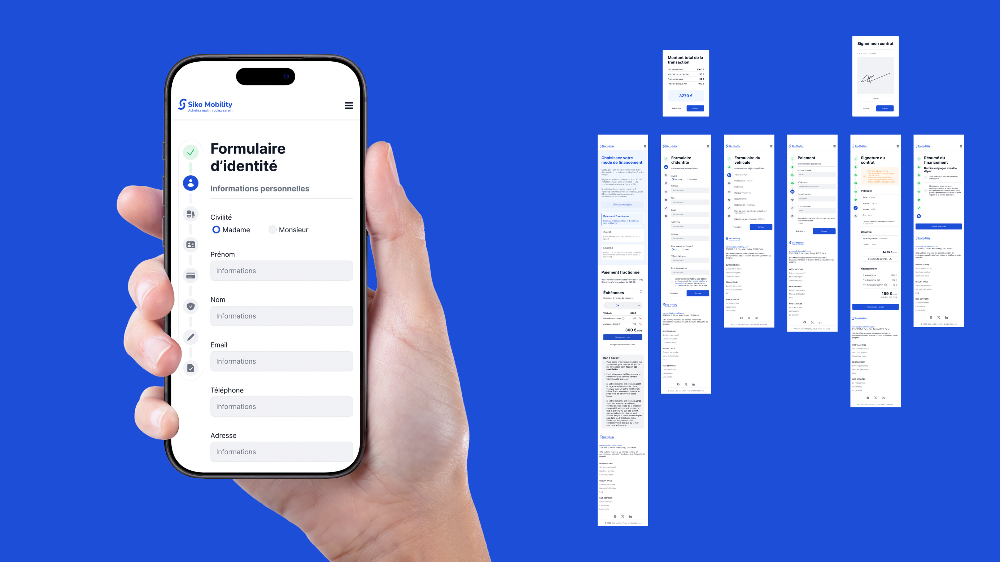

SCROLL
tanguy.studio
SIKO MOBILITY
De la recherche à la réservation, chaque écran est conçu pour réduire les frictions et garder le contrôle à portée de pouce.
ACCÉDER AU PROTOTYPE



Contexte et objectifs
Le produit regroupe plusieurs actions clés de mobilité dans une interface consultée en déplacement. L'enjeu principal est de raccourcir le temps d'accès à l'information et à l'action, tout en conservant une lecture claire.
Le travail a porté sur la hiérarchie visuelle, la simplification des parcours et la cohérence des composants pour fluidifier les usages sur mobile.

Travaillons ensemble
Tu as un projet UX/UI ? Parlons-en.